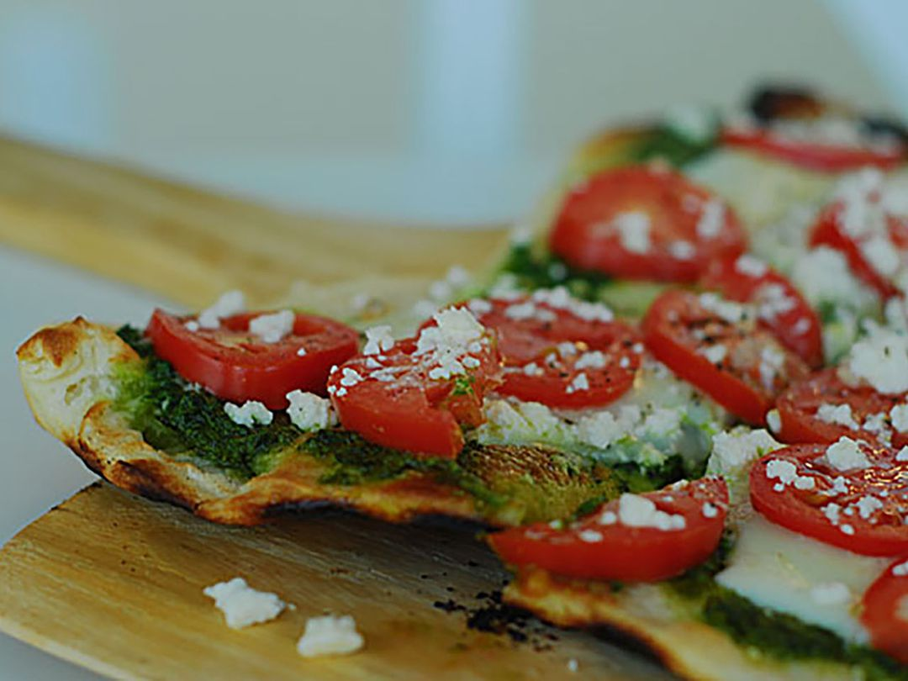

Pesto Pizza

Pesto pizza is a great alternative to your regular pizza
Ingredients
- 1 (12 inch) pre-baked pizza crust
- 1/2 cup pesto
- 1 ripe tomato, chopped
- 1 cup crumbled feta cheese
- 1 (2 ounce) can chopped black olives, drained
Steps
- Preheat the oven to 450 degrees F (230 degrees C)
- Spread pesto on pizza crust. Top with tomato, bell pepper, olives, red onion, artichoke hearts, and feta cheese
- Bake in the preheated oven until cheese is melted and browned, 8 to 10 minutes